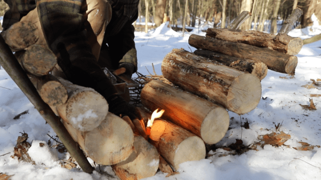
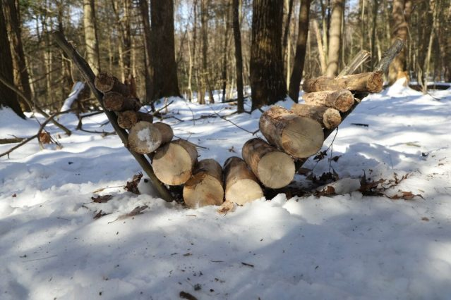
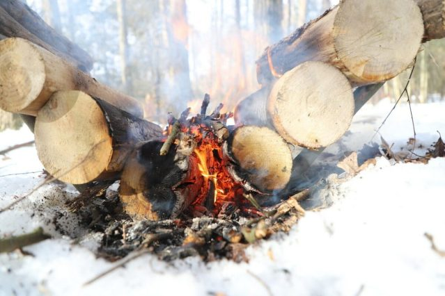

Building a self feeding fire
The self-feeding fire is a simplistic machine that feeds firewood into the campfire as the current fuel burns away. Through the use of gravity and resources found in the forest, a campfire can burn all night. This technique is not only fun but very practical for cold campouts. Imagine not having to feed fuel into the fire all night long. Just sit back and enjoy camp life with minimal work!
PREPARATION IS REQUIRED
The process of creating a self-feeding fire is very simple. It does; however, require some preparation when setting up, but if done correctly will be well worth the work.
FIND THE RIGHT MATERIALS
Begin by identifying a suitable camping area taking into consideration the wind direction and the amount of wood available for the campfire. For this project, wood selection is essential. Three types of wood should be collected, ramps, starter material, and fuel. The four ramps, which hold the fuel in place need to be made of green wood that is three feet in length, and approximately two inches in diameter. The starter material is similar to the wood used in creating a traditional campfire, small in diameter and dry. And finally, the fuel should be dry and approximately two feet in length and four to six inches in diameter. This wood should be round without any limbs or misshaped sections, as it is going to roll into the fire via gravity.
BUILD YOUR RAMPS
Once the materials are collected, it is time to assemble the self-feeding fire. Begin by driving the four ramp sticks into the ground; two sticks per side at 45 degree angles creating a V-shape. Once the ramp sticks are in place, load the ramps with the fuel collected. Finally, ignite a small fire on top of the two fuel logs that are touching at the bottom of each ramp. The key to having a successful self-feeding fire is to consistently sustain the initial fire while keeping it centered between the fuel logs. It is vital to have a solid base of embers before allowing the fire to manage itself.
Once the above steps of the process are completed persistence of maintaining the fire is important. The small base if started needs to burn into the fuel logs igniting them while building a base of embers. Be careful not allowing the fire to spread up the ramps onto the other logs. This has proven to be a major problem with this style of fire, but can easily be corrected if care is taken.
PRACTICE MAKES PERFECT
Like any other outdoor skill, building a self-feeding fire is easy if the appropriate steps are followed and the principles of fire are taken into consideration. Oxygen, heat, and fuel, known as the triangle of fire is the ultimate guide to being successful. Use the triangle as a guide to troubleshoot any problems that occur. Also remember to carefully choose materials. Tinder, kindling, and fuel need to be appropriately sized for the fire.
Although, a self-feeding fire takes time to set up, but if done correctly will offer hours of enjoyment around camp. Most of all, enjoy the process!